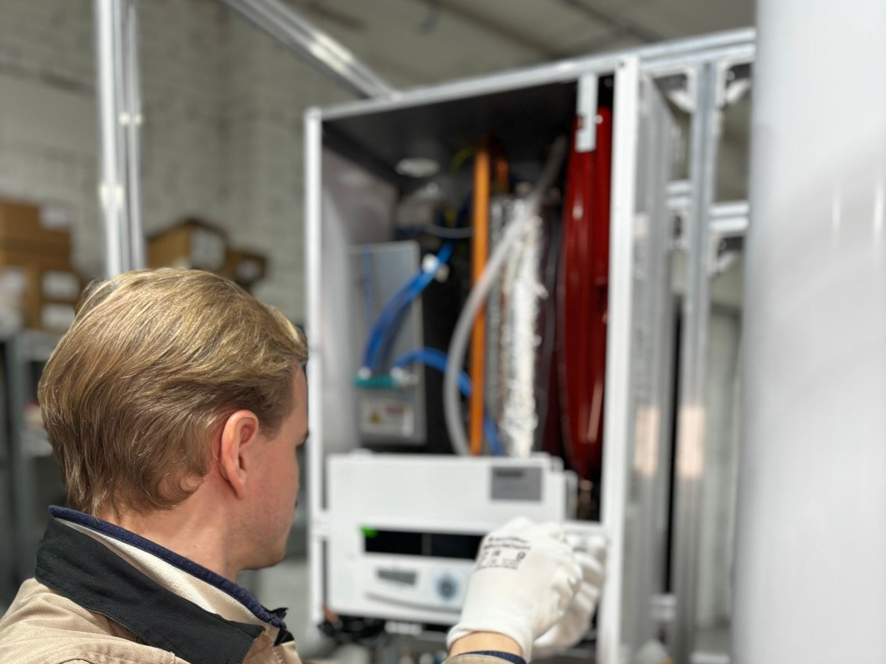

Why do so many people switch to tankless? Mostly three things: hot water that keeps coming, lower standby energy use, and space. A tankless heater stays idle until you open a tap, then fires a high-output burner or electric element to heat water as it flows. With no stored water to keep warm, it wastes less energy between uses, and with regular descaling it can last two decades. It is not magic, though. Performance depends entirely on sizing and installation, which is where most of our work in Newton, MA goes.
The most important step happens before anything is installed. We total your peak demand in gallons per minute, such as a shower, a kitchen sink, and the dishwasher at once, and compare it against how much the unit must heat cold winter water. That tells us the real capacity you need. Next we check the supply side. Gas tankless units fire at up to around 199,000 BTU, so a half-inch line that fed an old tank is often too small. Condensing models vent through PVC or polypropylene and need a condensate drain, while non-condensing units need stainless steel venting. Electric units bring their own demands, often needing multiple large breakers and sometimes a service upgrade.
We install every tankless unit with its future maintenance in mind. That means isolation valves for descaling, a gas line with a sediment trap sized for the burner's full demand, venting that meets the manufacturer's rules for length and termination, and a condensate line with a neutralizer on condensing models. Where water hardness is high, we explain scale protection options before the unit goes on the wall. Optional recirculation can shorten the wait at distant fixtures. We handle permits where required, test the unit at full flow, and show you how it works. Call (617) 209-6516 from anywhere in Newton for a demand assessment and a clear quote.
What homeowners call us about most is Water Heater Installation in Newton. Start there if you're not sure what you need.

When to Call for Tankless Water Heater Installation
Most tanks announce trouble weeks or months ahead with rumbling noises, rusty water, or hot showers that keep getting shorter. These are the red flags our technicians see most often before a breakdown:
- A remodel that would benefit from a compact wall-mounted heater
- Paying to keep a full tank hot even when no one is home
- Hot water running out during back-to-back showers
- More people or more fixtures than your current heater was sized for
- Renovation work that makes gas line and vent changes easier to fit in
- Wanting a unit that can last up to twice as long as a typical tank
- An aging tank that has started to rust, rumble, or leak
- An addition or guest suite that is a long run from the main heater
Small Symptoms, Big Consequences
A worn-out anode rod, a sediment-choked tank, or a weak thermocouple rarely fixes itself, and the repair usually costs more the longer it waits. A quick call to (617) 209-6516 gets a technician out to check it before it becomes an emergency.
Talk to Us About Tankless Water Heater Installation
Call our team for pricing today.
Tap to Call (617) 209-6516Your Tankless Water Heater Installation Questions Answered
Why Hire a Professional for Tankless Water Heater Installation?
Tankless installation asks much more of a home than a like-for-like tank swap. A whole-home gas unit can demand several times the gas flow of a standard tank, and running it on an undersized line causes ignition faults and inconsistent temperatures. Venting is equally specific: condensing units use plastic vent pipe and need a condensate drain, non-condensing units need stainless steel, and neither can simply reuse an existing tank vent in most cases. Electric tankless can require several dedicated high-amperage breakers, and mistakes with gas, venting, or high-amperage wiring carry real fire and carbon monoxide risks.
Done professionally, a tankless system performs well and stays safe. We start with a real demand assessment, confirm the gas and electrical supply, and design venting that meets the manufacturer's requirements. The install includes service valves, a sediment trap, a correctly routed relief valve line, and a neutralized condensate drain where needed, followed by a full-flow test. Just as important, we tell you plainly if a tank, hybrid, or smaller point-of-use unit would serve you better. The goal is the right water heater, not just a tankless sale.
What to Expect From Our Team
Good water heater work comes down to a consistent routine, and ours starts with a real diagnosis instead of a guess. Here's how we handle tankless water heater installation from start to finish:
Flow Rate & Temperature Rise
We total the fixtures you run at the same time in gallons per minute and factor in winter inlet temperature, so the unit never falls behind in winter.
Gas, Venting & Power Check
We confirm the gas line and meter can feed the burner's full BTU demand, plan the right venting, and check the panel for electric units before quoting.
Careful Install
We mount the unit, run gas and venting to the manufacturer's specs, add isolation valves for descaling, and pipe the relief valve and condensate to safe locations.
Full-Flow Testing & Walkthrough
Startup includes a full-flow test, a gas pressure check with the burner at high fire, a leak check on every joint, and a plain explanation of settings and maintenance.
Want a Professional Opinion?
We give honest advice and upfront pricing on every job, big or small.
Tap to Call (617) 209-6516Tips to Keep Your Water Heater Healthy
A few simple habits, like an annual flush and a quick look at the relief valve, can add years to a tank. Here's where to begin:
- Check the vent cap outside for nests, debris, or buildup
- Consider a water softener or scale-prevention filter if your water is hard
- Descale the heat exchanger once a year, or more often with hard water
- Do not cut power to a unit in a cold space, since its freeze protection needs electricity
- A setting near 120F limits scalding and reduces scale formation
- Check and rinse the small filter screen at the cold inlet periodically
- If the unit shows a recurring code, note it and have it checked
Doing It Yourself vs. Hiring a Technician
Online videos may help in a pinch, yet lasting repairs and code-compliant installs depend on correct venting, proper relief valve discharge piping, and a trained technician. A side-by-side look:
| Consideration | Doing It Yourself | Hiring a Pro |
|---|---|---|
| Sizing | Guessed from the old tank size | Calculated for your coldest months |
| Gas Line | Old half-inch line reused regardless of load | Piping sized to the burner |
| Exhaust | Exhaust risk from improper venting | Condensing or stainless venting done properly |
| Electrical | Overloaded circuits and tripped breakers | Service upgrades flagged up front |
| Future Service | Hard water left unaddressed | Isolation valves installed for quick descaling |
| Result | Performance that falls short in winter | Steady hot water at real demand |
Book a Visit Today
Get your hot water back before a small fault turns into a flooded floor. Newton Water Heater is ready to respond fast.
Get Help: (617) 209-6516Tankless Water Heater Installation Near Newton
Wherever you are in the area, the same experienced team shows up with the same parts and the same pricing. Find your community below.